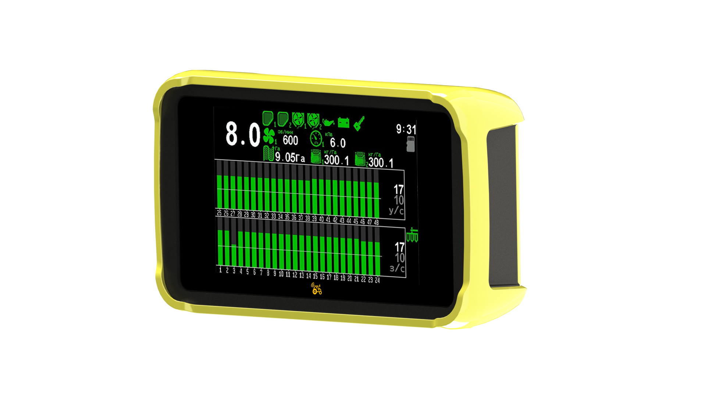

Erste Schritte
Das Panel und sein Touchscreen
Woraus das Panel Hectare 5 aus Sicht des Bedieners besteht — ein Touchscreen ohne Tasten — und was sonst noch eingebaut ist.
Das Hectare 5 hat keine Tasten. Alles geschieht mit den Fingern auf dem Bildschirm: Tippen, Berühren und Halten, Wischen sowie Tippen mit zwei oder drei Fingern. Was jede Geste auf welchem Bildschirm bewirkt, steht unter Touchzonen und Gesten.

Der Bildschirm
- Farbbildschirm mit 800 × 480 Bildpunkten und berührungsempfindlicher Oberfläche. Er erkennt bis zu drei Finger gleichzeitig — daran unterscheidet das Panel ein Tippen von einem Zwei- oder Dreifingertippen.
- Die Helligkeit wird von Hand in Schritten von 10 % im Menü „Settings“ (Einstellungen) eingestellt. Eine automatische Helligkeit gibt es nicht. Siehe Bildschirmhelligkeit einstellen.
- Ton. Das Panel klickt bei jeder erkannten Berührung, wenn „Buttons sound“ (Tastenton) im Menü „Settings“ auf „Yes“ (Ja) steht. Eine Geste, die der Bildschirm vor Ihnen nicht verwendet, gibt keinen Klick. Alarme haben ihren eigenen Ton, und das Panel piept, wenn die Aussaat beginnt und endet.
Im Panel eingebaut
| Teil | Was Sie davon sehen |
|---|---|
| microSD-Kartenschacht | Ein Kartensymbol auf dem Startbildschirm, solange eine Karte bereit ist. Berichte werden auf die Karte geschrieben. Siehe Speicherkarte. |
| Uhr mit eigener Batterie | Die Uhrzeit oben rechts auf dem Startbildschirm. Eine schwache Uhrenbatterie zeigt sich als BAT. Siehe Uhr. |
| GPS-Empfänger | Ein Satellitensymbol in der rechten Spalte des Startbildschirms, mit der Zahl der Satelliten. Er kann als Geschwindigkeitsquelle dienen. Siehe GPS. |
Wie Bildschirme, Menüs und Fenster funktionieren: Menüs, Kontextmenüs, Zahlenblock und Fenster.
Ihre Maschine tut etwas, das diese Seite nicht beantwortet? Schreiben Sie an support@agriwelt.com — es antwortet ein Ingenieur.